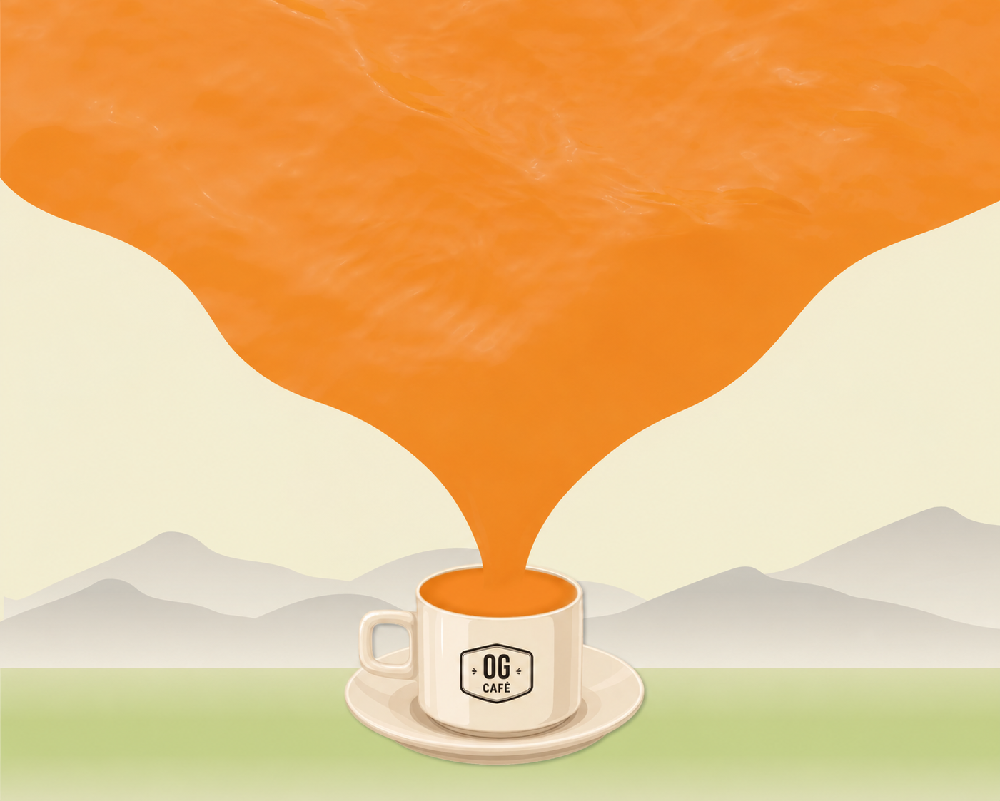

HOW IT ALL STARTED ☕
Three friends. One idea. One OG dream.
KYSAR
Co-Founder & Operations Director
GAVASKAR
Founder & Creative Director
SAI
Co-Founder & Customer Experience Director
KYSAR
Co-Founder & Operations Director
GAVASKAR
Founder & Creative Director
SAI
Co-Founder & Customer Experience Director
OG Café started with three friends Gavaskar, Kysar, and Sai who shared a simple love for coffee,
conversations, and creating a place where people could feel at home.
Gavaskar, the founder, turned that idea into a vision. With his passion for creating something unique, he brought
the dream to life and gave OG Café its identity.
Kysar brought creativity, energy, and the belief that every little detail matters from the
atmosphere of the café
to the experience of every guest.
Sai brought the warmth and people-first spirit that became an important part of OG Café
making sure that every
customer feels welcomed, valued, and part of the OG family.
Today, every cup we serve carries a little piece of that original dream
good coffee, great company, and unforgettable moments.
Three friends started the dream.
Every guest becomes part of the story.
WHAT WE BELIEVE
Coffee is more than a drink.
It's a moment...💛